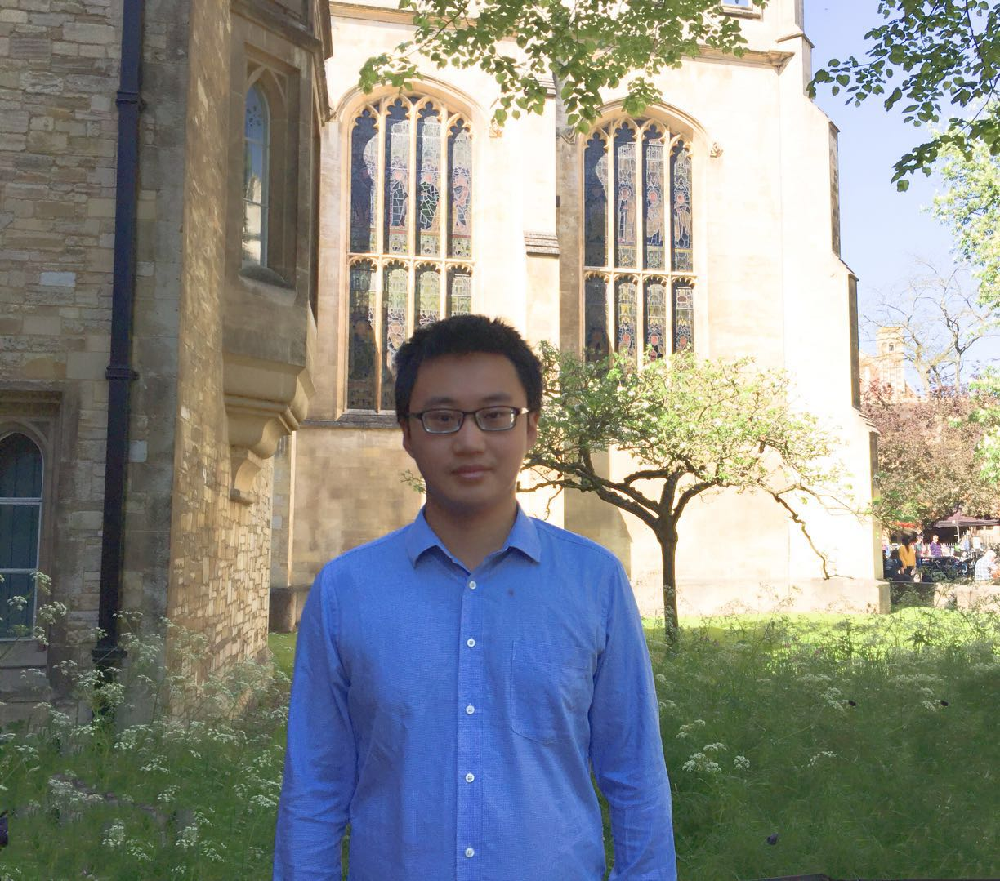

Department of Computer Science,
University of Oxford
Email: qi.liu[at]cs.ox.ac.uk
[Bio] [Publication] [Patent] [Experience][Award] [Talk] [Teaching] [Service] [Miscellaneous]
Biography
I am a DPhil (Ph.D.) student at the University of Oxford, fortunately advised by Matt Kusner and Phil Blunsom. My DPhil study is generously supported by Google DeepMind. Previously, I worked at Facebook AI Research in New York under the supervision of Douwe Kiela. I obtained my Master of Science (M.Sc.) degree from Department of Computer Science, National University of Singapore in 2016, working with Anthony K.H. Tung. Before that, I received my Bachelor of Engineering (B.Eng) degree from Shandong University in 2014.
My primary research interests lie in natural language processing and machine learning. I am particularly interested in applying deep learning techniques for natural language understanding, generative models and graph representations.
Pretraining the Noisy Channel Model for Task-Oriented Dialogue,
Qi Liu, Lei Yu, Laura Rimell, Phil Blunsom.
Transactions of the Association for Computational Linguistics (TACL), 2021. [PDF]
Counterfactual Data Augmentation for Neural Machine Translation,
Qi Liu, Matt J. Kusner, Phil Blunsom.
North American Chapter of the Association for Computational Linguistics (NAACL), 2021. [PDF]
Fast and Scalable Dialogue State Tracking with Explicit Modular Decomposition,
Dingmin Wang, Chenghua Lin, Qi Liu, Kam-Fai Wong.
North American Chapter of the Association for Computational Linguistics (NAACL), 2021. [PDF]
Unsupervised Point Cloud Pre-Training via View-Point Occlusion Completion,
Hanchen Wang, Qi Liu, Xiangyu Yue, Joan Lasenby, Matthew J. Kusner.
arXiv:2010.01089, 2020. [PDF][CODE]
A Survey on Contextual Embeddings,
Qi Liu, Matt J. Kusner, Phil Blunsom.
arXiv:2003.07278, 2020. [PDF]
A Single RGB Camera Based Gait Analysis with a Mobile Tele-Robot for Healthcare,
Ziyang Wang, Fani Deligianni, Qi Liu, Irina Voiculescu, Guang-Zhong Yang.
arXiv:2002.04700, 2020. [PDF]
Smart Contract Vulnerability Detection using Graph Neural Network,
Yuan Zhuang, Zhenguang Liu, Peng Qian, Qi Liu, Xiang Wang, Qinming He.
International Joint Conference on Artificial Intelligence (IJCAI), 2020. [PDF]
Multi-Task Self-Supervised Learning for Disfluency Detection,
Shaolei Wang, Wanxiang Che, Qi Liu, Pengda Qin, Ting Liu, William Yang Wang.
Association for the Advancement of Artificial Intelligence (AAAI), 2020. [PDF]
Hyperbolic Graph Neural Networks,
Qi Liu, Maximilian Nickel, Douwe Kiela.
Neural Information Processing Systems (NeurIPS), 2019. [PDF][CODE]
Quaternion Knowledge Graph Embedding,
Shuai Zhang, Yi Tay, Lina Yao, Qi Liu.
Neural Information Processing Systems (NeurIPS), 2019. [PDF][CODE]
Insertion-based Decoding with Automatically Inferred Generation Order,
Jiatao Gu, Qi Liu, Kyunghyun Cho.
Transactions of the Association for Computational Linguistics (TACL), 2019. [PDF]
Towards Natural and Accurate Future Motion Prediction of Humans and Animals,
Zhenguang Liu, Shuang Wu, Shuyuan Jin, Qi Liu, Shijian Lu, Roger Zimmermann, Li Cheng.
Conference on Computer Vision and Pattern Recognition (CVPR), 2019. [PDF][CODE]
Constrained Graph Variational Autoencoders for Molecule Design,
Qi Liu, Miltiadis Allamanis, Marc Brockschmidt, Alexander L. Gaunt.
Neural Information Processing Systems (NeurIPS), 2018. [PDF][CODE]
Sentence-State LSTM for Text Representation,
Yue Zhang, Qi Liu, Linfeng Song.
Annual Meeting of the Association for Computational Linguistics (ACL), 2018. [PDF][CODE]
Mining Evidences for Concept Stock Recommendation,
Qi Liu, Yue Zhang.
North American Chapter of the Association for Computational Linguistics (NAACL), 2018. [PDF][CODE]
Learning Domain-specific Representations for Multi-Domain Sentiment Classification,
Qi Liu, Yue Zhang, Jiangming Liu.
North American Chapter of the Association for Computational Linguistics (NAACL), 2018. [PDF][CODE]
Multi-modal Multi-task Learning for Automatic Dietary Assessment,
Qi Liu, Yue Zhang, Zhenguang Liu, Ye Yuan, Li Cheng and Roger Zimmermann.
Association for the Advancement of Artificial Intelligence (AAAI), 2018. [PDF]
QALink: Enrich Text Documents with Relevant Q&A Site Contents,
Yixuan Tang, Weilong Huang, Qi Liu, Anthony K.H. Tung, Xiaoli Wang, Jisong Yang and Beibei Zhang.
ACM International Conference on Information and Knowledge Management (CIKM), 2017. [PDF][DEMO]
EtherQL: A Query Layer for Blockchain,
Yang Li, Kai Zheng, Ying Yan, Qi Liu, Xiaofang Zhou.
International Conference on Database Systems for Advanced Applications (DASFAA), 2017. [PDF][CODE]
Towards Personalized Activity Level Prediction in Community Question Answering Websites,
Zhenguang Liu, Yingjie Xia, Qi Liu, Qinming He, Yanxiang Chen, Roger Zimmermann.
ACM Transactions on Multimedia Computing, Communications and Applications (TOMM), 2017. [PDF]
Behavior Pattern Clustering in Blockchain Networks,
Butian Huang, Zhenguang Liu, Jianhai Chen, Anan Liu, Qi Liu, Qinming He.
Multimedia Tools and Applications (MTAP), 2017. [PDF]
Fusion of Magnetic and Visual Sensors for Indoor Localization: Infrastructure-free and More Effective,
Zhenguang Liu, Luming Zhang, Qi Liu, Yifang Yin, Li Cheng, Roger Zimmermann.
IEEE Transactions on Multimedia (TMM), 2016. [PDF][DATASET]
I Ate This: A Photo-based Food Journaling System with Expert Feedback,
Shubham Goyal, Qi Liu, Khairina Tajul-Arifin, Waqas Awan, Bimlesh Wadhwa, Zhenguang Liu.
Workshop on Healthcare at SIGCHI, 2016. [PDF][DEMO]
DocRicher: An Automatic Annotation System for Text Documents Using Social Media,
Qiang Hu, Qi Liu, Xiaoli Wang, Anthony K.H. Tung, Shubham Goyal, Jisong Yang.
ACM Special Interest Group on Management of Data (SIGMOD), 2015. [PDF][DEMO]
A Programmable SmartContract Defined Database,
Qi Liu, Yang Chen, Ying Yan, Thomas Moscibroda.
(US patent, filed date 17/03/2017, part of the project Microsoft Coco)
Google DeepMind, London
Research Scientist Intern, advised by Phil Blunsom, Jul. 2020 -
Facebook AI Research, New York City
Researcher, advised by Douwe Kiela, Aug. 2018 - Aug. 2019
Microsoft Research, Cambridge
Research Intern, advised by Alexander Gaunt, Marc Brockschmidt, Miltos Allamanis, Mar. 2018 - Jun. 2018
Singapore University of Technology and Design
Research Assistant, advised by Yue Zhang, Feb. 2017 - Mar. 2018
Microsoft Research, Beijing
Research Intern, advised by Ying Yan, Thomas Moscibroda, Sep. 2016 - Dec. 2016
Holmusk
Data Scientist, Apr. 2015 - Oct. 2015
SeSaMe Centre, National University of Singapore
Research Assistant, advised by Anthony K.H. Tung, Dec. 2014 - May. 2016
Chinese Academy of Sciences
Research Intern, Jul. 2013 - Oct. 2013
Selected Honors & Awards
NeurIPS Travel Award, 2019
Google DeepMind Scholarship, 2019
Lee Kuan Yew Global Business Plan Competition, Winner (3 out of 550), 2017
Microsoft Star of Tomorrow Excellence Award, 2016
ACM SIGMOD Travel Grant, 2015
Predict Exacerbation in Patients with COPD, CrowdANALYTIX, Winner, 2015
Changing the Landscape of Healthcare in US, CrowdANALYTIX, Winner, 2015
NUS Research Scholarship, 2014
Invited Talks
ELLIS Workshop on Geometric and Relational Deep Learning, April 24, 2020. Invited by Thomas Kipf.
Facebook AI Research, August 8, 2019. Invited by Laurens van der Maaten.
Columbia University, November 29, 2018. Invited by Baishakhi Ray.
Microsoft Research, Cambridge, June 15, 2018. Invited by Sebastian Nowozin.
Teaching
2020-2021, COMP0081: Applied Machine Learning, UCL
Instructor: Matt Kusner
2015-2016 Semester 2, CS5344: Big Data Analytics Technology, NUS
Instructor: Tan Kian Lee
2015-2016 Semester 1, CS3244: Machine Learning, NUS
Instructor: Tan Chew Lim